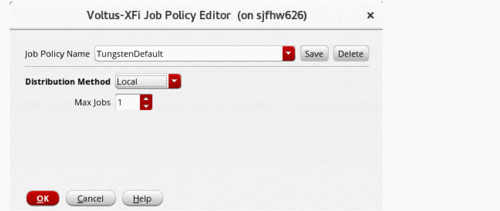

Setting Up an Extraction Job Policy
-
Choose Options – Job Setup from the menu bar to open the Voltus XFi Job Policy Editor form.
 - In the Job Policy Name field, specify a name for the job policy. If no job policy has been set up earlier, the Job Policy Name field displays TungstenDefault as the default job policy name.
- From the Distribution Method drop-down list, choose one of the following methods:
-
Depending upon the Distribution Method you selected, specify the fields described as follows:
Distribution Method Fields Description bsubcommand to submit a job for batched execution by a distributed load-sharing batch system. -
Click Save to save the changes.
The Job Policy Name drop-down list displays the name of the job policy you specified. - Click OK.
Editing a Job Policy
- On the Voltus XFi Job Policy Editor form, from the Job Policy Name drop-down list, select the job policy that you want to edit.
- From the Distribution Method drop-down list, select a distribution method.
- Depending upon the Distribution Method you selected, update other fields, as required.
- Click Save to save the changes.
- Click OK.
Deleting a Job Policy
-
In the Voltus XFi Job Policy Editor form, from the Job Policy Name drop-down list, select the job policy you want to delete, and then click Delete.
The selected job policy is deleted.
Related Topics
Return to top